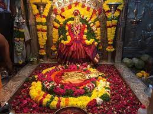

Balkampet Yellamma Pochamma

- This Temple is Recognised as one of the oldest temples in Hyderabad.
- The Balkampet
Yellamma temple was constructed in the 15th century, which was later renovated in the 20th.
- Goddess Yellamma is an incarnation of Kali and the idol of the deity is present 10 feet below the ground.